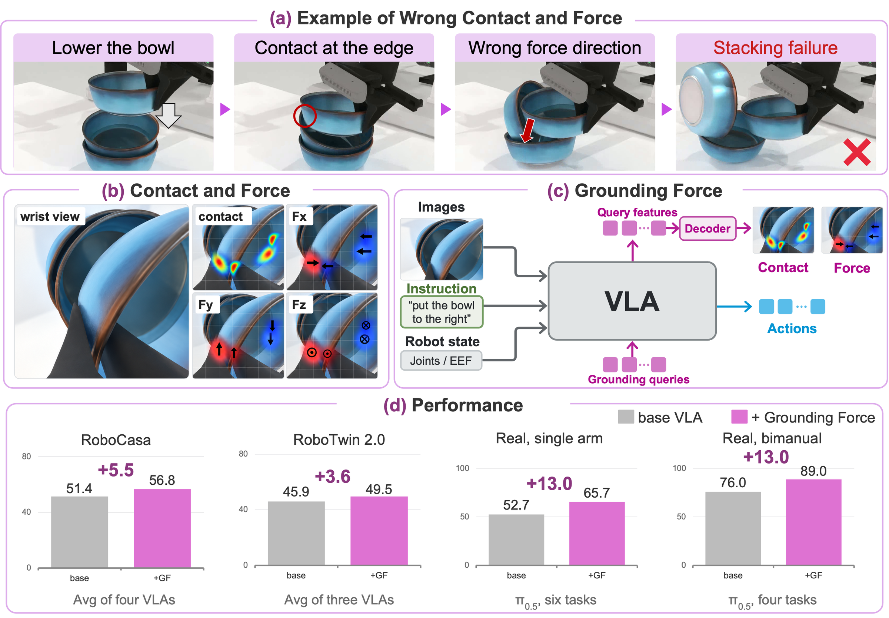
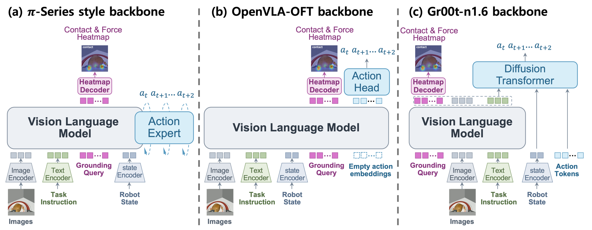
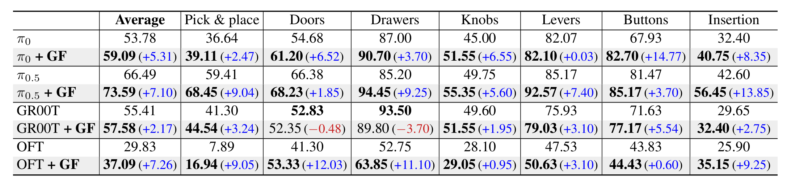
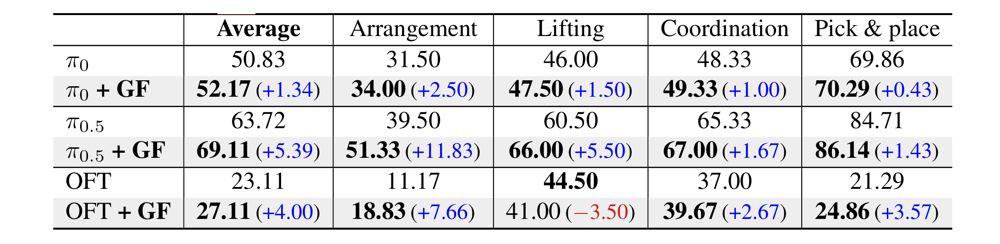
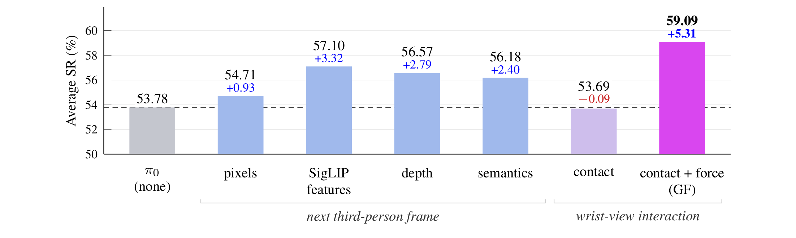
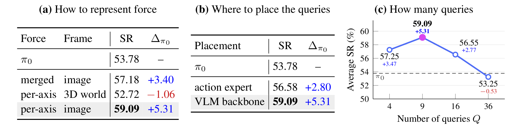
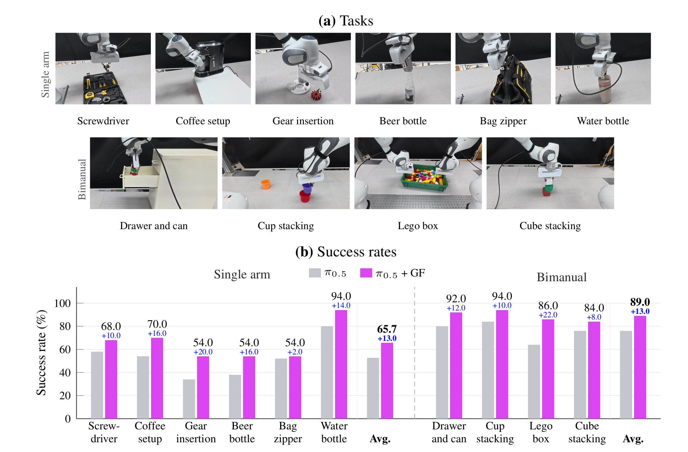

A VLA that predicts where its next action makes contact and how hard it pushes — learned in simulation, and needing no force or tactile sensor at test time.

Vision-language-action (VLA) models inherit semantic understanding from pretrained vision-language models and map observations and instructions directly to robot actions. The success of an action, however, also depends on the physical interaction, where the robot makes contact with an object and how it applies force. A VLA trained only to imitate actions never represents this physical interaction explicitly. Prior work trains the VLA to predict targets that describe the scene rather than the interaction, or measures the interaction with force or tactile sensors, which most robots and datasets lack.
We present Grounding Force (GF), which trains a VLA to predict, alongside its next action, the contact and force that action will produce, as a contact map and force maps on the wrist-camera image. This supervision is used only in training, so the policy needs no force or tactile sensor at test time. Across four backbones (π0, π0.5, GR00T N1.6, and OpenVLA-OFT) on RoboCasa and RoboTwin 2.0, Grounding Force consistently improves the base VLAs, by up to 7.3% in success rate, and helps more than predicting future images, depth, or semantics. With pseudo-labels from a labeler trained only in simulation, it also improves π0.5 by 13.0% on both real single-arm and bimanual robots. These results indicate that predicting the physical interaction in the image frame, without any sensor at test time, is an effective supervision signal for VLAs.
Contact and force could be predicted as 3D points and vectors in the world frame. We instead express them as maps over the wrist-camera image, the view among the policy's inputs that shows the gripper and the objects it manipulates. A contact map marks where the interaction occurs, and three signed force maps give the x, y and z components of the contact force there.
Two things follow from that choice. Aligning the target with the patch grid lets it build on the VLM's visual representation, and a target defined in the camera's own view needs neither per-contact depth nor the camera pose — both of which a world-frame target would require, and neither of which the model is given. Labels are computed automatically by replaying each demonstration in simulation, so no sensor is involved at any point.

A set of grounding query tokens is appended to the input of the VLM backbone. Through attention they gather what is needed to predict the maps into a few tokens. Their output is read both by the heatmap decoder, which produces the maps, and by the action head — so actions are decoded from a representation trained to encode the interaction. The queries never attend to action tokens, and the decoder sees only the query outputs, never the image tokens.
At deployment the heatmap decoder is discarded and the policy runs with no force or tactile input. The nine query tokens are the only addition to the base VLA, and they add about 1% to inference time.
Grounding Force improves the average success rate of every base VLA on both benchmarks, by 2.17% to 7.26% absolute on RoboCasa and 1.34% to 5.39% on RoboTwin 2.0.


Below are rollouts of the base VLA (left) and the same model with Grounding Force (right) on the same RoboCasa task. Under the right video, we show the model's predicted force maps (x, y, z) and contact map at each step.
Both videos play at 1× and start in sync.


We evaluate on a real Franka Panda and on a bimanual setup of two Franka Pandas, across six single-arm and four bimanual tasks, with no force or tactile sensor. The contact and force maps are pseudo-labels from a labeler trained only in simulation. Grounding Force improves π0.5 on all ten tasks and raises the average success rate by 13.0% on both setups.

@inproceedings{anonymous2027groundingforce,
title = {Grounding Force: Image-Aligned Contact and Force Prediction
for Vision-Language-Action Models},
author = {Anonymous},
booktitle = {Submitted to the Fifteenth International Conference on
Learning Representations},
year = {2027},
note = {Under review}
}